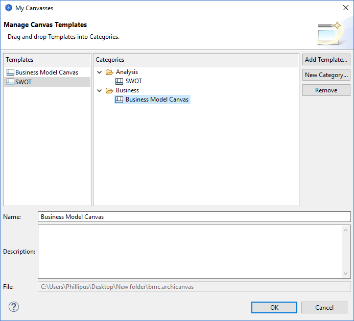

Managing your Canvas Templates
You store Canvas templates on your file system as "*.archicanvas" files. These can be stored anywhere on your local filing system. Archi allows you to create user collections that point to these templates. These are shortcuts to the actual templates. To manage your collection of templates follow these steps:
- Select the "Views" folder for the chosen Model in the Model Tree, right-click on it and select "New->Canvas from Template..." A wizard will open:

- Select "Manage..." from the "Templates" section on the left of the wizard. A dialog window will open:

- This dialog allows you to add, rename and remove new template categories, and also to add templates from file to your collection. You can also edit and change the name and description of each template.
- To add a template from file, click on the "Add Template..." button. Choose the "*.archicanvas" file from the file dialog that appears.
- To add a new template category, click on the "New Category..." button. Provide a name for the category.
- To add templates to a category, drag and drop a template entry from the "Templates" table to a category folder in the "Categories" tree. Note that a template can appear in more than one category folder.